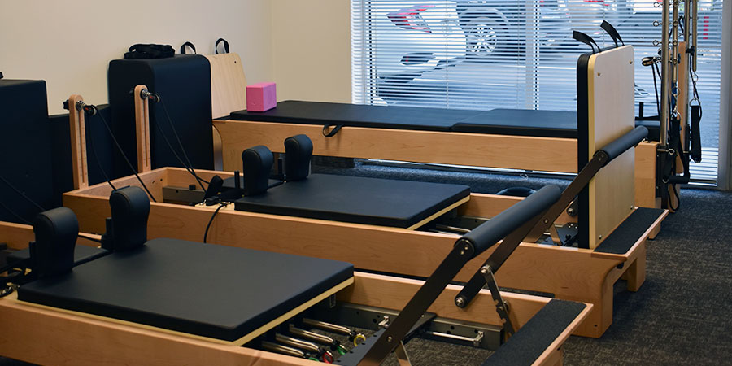

KRIYA PILATES
Entrenamiento funcional sobre camas de pilates reformers

Acerca de nosotros
KRIYA se inició allá por el 2018 en la ciudad de San Nicolas de los
arroyos en el Barrio Belgrano.
Nació como un emprendimiento dispuesto a generar un espacio de trabajo distinto,
amigable, a conciencia,
creando una comunidad de pilates donde cada alumno es invitado a una búsqueda corporal,
un desafío
diario para encontrar nuevos lugares, aplicarlos en su vida cotidiana y luego compartir
con orgullo las
buenas nuevas de sus descubrimientos.
Contamos con excelentes profesionales de pilates que aportan su mágica singularidad
para el trabajo en equipo, cuestión que creemos fundamental para lograr
un clima óptimo de enseñanza, aprendizaje y armonía.
Todo en un ambiente comodo donde encontraras amigos y buena onda.
Te estamos esperando para que formes parte de este grupo de entranamiento.
* Conectar mente/cuerpo y disminuir el estrés
* Entrenar para tonificar, mejorar la circulación y fortalecer, cuidando la columna desde el trabajo de centro
* Aprender a relajar zonas tensionadas desde hace tiempo y fortalecer otras
* Hacer post-rehabilitación de musculatura debilitada después de una lesión
* Mantener el cuerpo activo en la tercera edad
* Encontrar tiempo para vos y dedicarte esta hora especial para salir de lo cotidiano y zambullirte en la búsqueda corporal
* Podes realizar sólo pilates o combinarlo con estiramiento.
En Kriya encontraras un espacio para:
* Abrir conciencia corporal* Conectar mente/cuerpo y disminuir el estrés
* Entrenar para tonificar, mejorar la circulación y fortalecer, cuidando la columna desde el trabajo de centro
* Aprender a relajar zonas tensionadas desde hace tiempo y fortalecer otras
* Hacer post-rehabilitación de musculatura debilitada después de una lesión
* Mantener el cuerpo activo en la tercera edad
* Encontrar tiempo para vos y dedicarte esta hora especial para salir de lo cotidiano y zambullirte en la búsqueda corporal
* Podes realizar sólo pilates o combinarlo con estiramiento.
¡Bienvenidos a KRIYA!
.jpeg)
.jpeg)


Beneficios
Los ejercicios de Pilates reformer nos ayudan a mejorar la postura, así como a mejorar
problemas de la espalda, incluso a corregir problemas como la escoliosis (se debe
consultar con el instructor de reformer o con un fisioterapéuta).
Pilates con reformer es una actividad ideal para trabajar la musculatura de la espalda
(multífidos, erectores de la columna…), que nos ayudarán a mantener la columna fuerte y
sana por muchos años.
La flexibilidad aumenta con la práctica del Pilates con máquinas reformer. Muchos
ejercicios están orientados al aumento de la flexibilidad mediante el uso de las correas
y las resistencias elásticas.
Mejora la circulación
Algunos ejercicios de Pilates con reformer nos ayudan a estimular la circulación de
retorno, algo muy beneficioso para la salud. Si quieres saber más acerca de los
beneficios de las posturas de inversión y la circulación sanguínea de retorno, en la
sección de ejercicio puedes ver un artículo sobre las botas de gravedad.
Las posturas invertidas son también algo común en las asanas de yoga. Al igual que con
el reformer, en estas posiciones también se estimula la circulación de retorno.
Gracias al trabajo de resistencias, el trabajo con la máquina de reformer nos ayuda a
aumentar la fuerta de nuestros músculos. Podemos adaptar las resistencias (muelles)
según nuestras necesidades y nuestra exigencia física.
Al ser un ejercicio sin impacto, es adecuado para casos especiales como personas con
lesiones o patologías físicas. La resistencia de los muelles nos permite adecuar el
entrenamiento a cada caso en particular.
El reformer nos permite un trabajo sin impacto, por lo que las articulaciones no sufren
absolutamente nada haciendo los ejercicios.
El Pilates Reformer es una de las máquinas más completas, diseñada por Joseph Pilates y
permite realizar infinidad de ejercicios completos. Su sistema de resortes, agarres,
poleas y muelles proporcionan una resistencia variable, que permite combinar diversos
tipos de ejercicios ideales para mejorar la condición física.
El trabajo que se realiza utilizando el Pilates Reformer, obtiene el doble de
beneficios, ya que otorga una resistencia progresiva durante la contracción del músculo
mientras se realizan los ejercicios, además brinda asistencia al músculo al acompañarlo
durante su relajamiento, así, con una adecuada coordinación por parte del instructor, se
logra un trabajo muscular de gran seguridad, para las fibras del músculo que se
encuentran en actividad.
Clases y horarios
Elegimos el pilates clásico para nuestras clases, ya que encontramos en él, gran profundidad en el
trabajo y podemos confirmar los avances que vemos en nuestros alumnos, siempre acompañado de
compromiso y constancia en el trabajo.
Los abonos son mensuales de 4, 8 o 12 clases y además de pilates, podes combinarla con estiramiento.
No es necesario tener un nivel específico, trabajamos con los distintos equipos del método:
Reformer,que se usarán a consideración de la instructora.
Una vez realizada la clase de prueba, agendamos tus horarios fijos, que podrás modificar, siempre
dentro del mismo mes, hasta 1 hora antes de la clase agendada y podrás realizar los cambios que
necesites.
Horarios
Turno manana:
Lunes a Viernes de 09.am a 12.pm
Turno Tarde:
Lunes a Viernes de 15.hs a 21.hs
Para comenzar las clases requerimos que bajes esta ficha medica y la hagas completar por tu medico de cabecera.